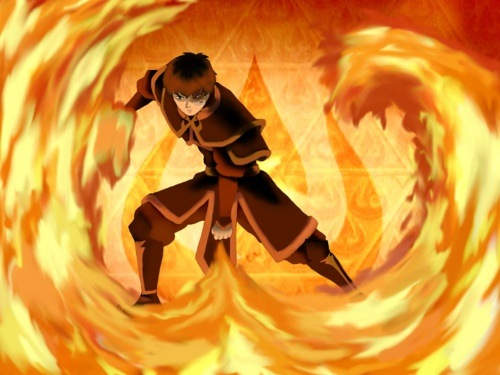
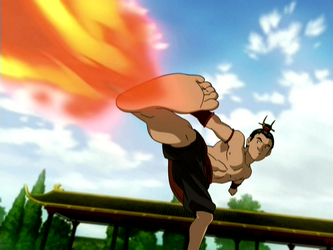
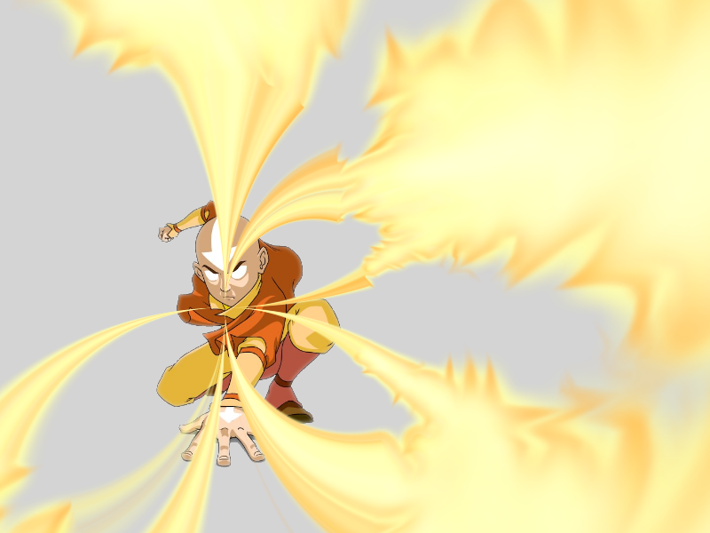

"Fire is the element of power."
Firebending is known for its intense and aggressive attacking style and general lack of adequate defensive moves, although firebenders can modify offensive maneuvers to function as a defense, such as creating large walls of fire[2] or shooting down incoming attacks with fire jabs.
Firebenders draw their power from the sun and other solar objects, such as comets, as well as the fiery core of the planet. A solar eclipse has the potential to completely negate a firebender's power, which is the result of a direct connection between the sun and firebending.
Firebenders use their chi as a source for their bending. This facet of firebending is a sharp contrast to the other bending arts, which manipulate already present sources of their element, though firebenders can also control or enhance flames nearby.
